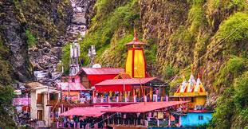
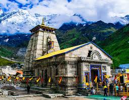
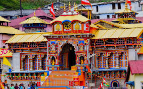

The Char Dham Yatra is a sacred pilgrimage visiting four holy shrines nestled in the Himalayas: Yamunotri, Gangotri, Kedarnath, and Badrinath. Each temple offers unique spiritual significance along with breathtaking Himalayan scenery.

Yamunotri is the source of the holy Yamuna River and marks the beginning of the Char Dham Yatra. The temple is set amidst serene snow-capped peaks and natural hot springs believed to have healing properties, attracting pilgrims seeking spiritual cleansing and peace.
Gangotri temple is dedicated to Goddess Ganga and stands at the origin of the sacred Ganges River. Surrounded by snow and dense forests, it offers a tranquil environment for prayer, meditation, and connection with nature’s pristine beauty.

Kedarnath temple, one of the twelve Jyotirlingas of Lord Shiva, is perched high in the Himalayas. Accessible mainly by trek, it draws devotees for its powerful spiritual energy and magnificent views of surrounding snow-covered peaks, especially during the pilgrimage season.

Badrinath temple is dedicated to Lord Vishnu and situated between the Nar and Narayan mountain ranges. It is famous for its sacred hot springs and attracts pilgrims year-round with its majestic setting and deep spiritual significance in Hindu mythology.